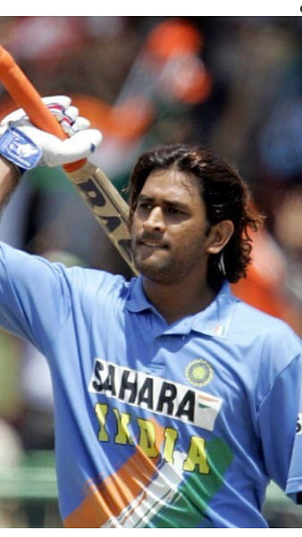

Captain Cool of Indian Cricket

Mahendra Singh Dhoni is a former Indian cricketer and one of the greatest captains and wicketkeeper-batsmen in the history of the game. He is the only captain to have won all three major ICC white-ball trophies: the T20 World Cup, the ODI World Cup and the Champions Trophy. Known for his calm temperament, he earned the nickname "Captain Cool".
Born on 7 July 1981 in Ranchi, Jharkhand, Dhoni was a football goalkeeper in school before he became a wicketkeeper for his school cricket team. Before his cricket career took off, he worked as a ticket collector at Kharagpur railway station, a story that has inspired millions of young Indians from small towns.
He made his ODI debut in December 2004 and his Test debut in December 2005. In 2005 he scored a spectacular 183 not out against Sri Lanka in Jaipur, announcing himself as a fearless finisher. He became India's T20 captain in 2007 and led the team to victory in the inaugural T20 World Cup the same year.
Under his captaincy India won the 2011 ODI World Cup, ending a 28-year wait, and the 2013 Champions Trophy. India also reached the number one spot in the ICC Test rankings in 2009. He led Chennai Super Kings in the IPL, winning multiple titles, and announced his retirement from international cricket on 15 August 2020.
Mahi • Thala • Captain Cool
Won every major ICC white-ball trophy as captain, known for calm decisions under pressure.
Redefined the art of finishing run chases and became one of the best wicketkeepers in the world.
His rise from a small city to the top of world cricket shows that talent and hard work can overcome any background.